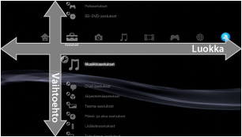
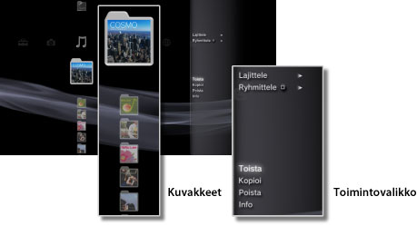
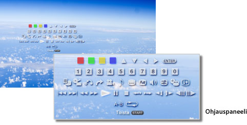

Tietoja XMB™-valikosta > Tietoja XMB™ (XrossMediaBar) -valikosta
Tietoja XMB™ (XrossMediaBar) -valikosta
XMB™-valikon käyttäminen
PS3™-järjestelmässä on käyttöliittymä, jonka nimi on XMB™ (XrossMediaBar). Vaakarivissä näytetään luokkiin jaetut järjestelmätoiminnot, ja pystyrivissä näytetään vaihtoehdot, jotka voi valita luokassa.

| Suuntanäppäimet | Valitse luokka tai vaihtoehto. |
|---|---|
 -näppäin -näppäin |
Vahvista vaihtoehdon valinta. |
 -näppäin -näppäin |
Peruuta toiminto. |
 -näppäin -näppäin |
Avaa asetusvalikko tai ohjauspaneeli. |
| PS-näppäin | Näytä XMB™-valikko. |
Sisällön toistaminen
Valitse XMB™-valikosta levyn tai tallennusvälineen sisältö ja paina sitten -näppäintä. Lopeta toisto painamalla -näppäintä.
Vihje
Joidenkin tallennusvälinetyyppien käyttämiseen tarvitaan USB-sovitin, joka ei tule PS3™-järjestelmän mukana.
Infopaneeli
Näytön oikeassa yläkulmassa olevassa infopaneelissa näkyy erilaisia tietoja, esimerkiksi verkossa parhaillaan olevien ystävien määrä, ilmoitukset uusista viesteistä sekä [What's New] -kohdassa näkyvät uusimmat tiedot.

(1) |
Avatar * |
|---|---|
(2) |
Verkossa olevien ystävien määrä * |
(3) |
Tiedot uudesta tekstichatista * |
(4) |
Tiedot uusista viesteistä |
(5) |
Päivämäärä ja aika |
(6) |
Varattu-kuvake |
(7) |
[What's New] -kohdassa näkyvät tiedot * |
* Näkyvät vain, kun olet kirjautunut sisään PSNSMiin.
Toimintovalikon käyttäminen
Valitse kuvake XMB™-valikosta ja tuo asetusvalikko näkyviin painamalla -näppäintä. Toimintovalikon voi piilottaa tai tuoda näkyviin painamalla -näppäintä.

Toimintovalikon vaihtoehdot
Toimintovalikon vaihtoehdot vaihtelevat luokan mukaan.
| Toista / Aloita / Näytä | Toista sisältöä. |
|---|---|
| Poista levy | Poista levy. |
| Poista | Poista sisältöä. |
| Kopioi | Kopioi sisältö järjestelmän tallennustilaan tai tallennusvälineeseen.*1 |
| Info | Katso sisällön tiedot. Voit muuttaa nimeä ja joitain muita tietoja. |
| Lisää soittolistaan | Lisää sisältöä soittolistaan. |
| Näytä kaikki | Näytä kaikki tallennusvälineeseen tai USB-tallennuslaitteeseen tallennetut kansiot.*1 |
| Lajittele | Lajittele kohteet esimerkiksi nimen tai päivämäärän mukaan. |
| Ryhmittele | Muuta ryhmittelymenetelmä albumin tai muodon tai jonkin muun asetuksen perusteella tapahtuvaksi.*2 |
| Poista useita | Valitse useita kohteita ja poista ne samalla kerralla. |
| Kopioi useita | Valitse useita kohteita ja kopioi ne samalla kerralla. |
| *1 |
Joidenkin tallennusvälinetyyppien käyttämiseen tarvitaan USB-sovitin, joka ei tule PS3™-järjestelmän mukana. |
|---|---|
| *2 |
Sisältö, jossa ei ole ryhmittelyyn tarvittavia tietoja, ryhmitellään [Tuntematon]-kansioon. Kaikkea sisältöä ei ehkä ryhmitellä. |
Ohjauspaneelin käyttäminen
Kun sisältöä toistetaan, voit tuoda ohjauspaneelin näkyviin painamalla -näppäintä. Ohjauspaneelin voi piilottaa tai tuoda näkyviin painamalla -näppäintä. Ohjauspaneelin vaihtoehdot vaihtelevat toistettavan sisällön mukaan.

Useiden toimintojen käyttäminen samanaikaisesti
Voit käyttää samaan aikaan useita toimintoja. Voit esimerkiksi katsella kuvia  (Kuvat) -toiminnolla, käyttää Internetiä
(Kuvat) -toiminnolla, käyttää Internetiä  (Verkko) -toiminnolla ja kuunnella musiikkia
(Verkko) -toiminnolla ja kuunnella musiikkia  (Musiikki) -toiminnolla.
(Musiikki) -toiminnolla.
Esimerkki: kuvien katselu (Kuvat)-toiminnolla samaan aikaan, kun musiikkia toistetaan (Musiikki)-toiminnolla
1. |
Toista musiikkia kohdassa |
|---|---|
2. |
Paina PS-näppäintä. |
3. |
Valitse |
Vihjeitä
- Et voi käyttää muita toimintoja samalla kun toistat (Musiikki) -sisältöä Super Audio CD -tilassa tai silloin, kun äänen lähtötaajuudeksi
 (Asetukset) >
(Asetukset) >  (Musiikkiasetukset) > [Ulostulotaajuus] on valittu [44,1/88,2/176,4 kHz].
(Musiikkiasetukset) > [Ulostulotaajuus] on valittu [44,1/88,2/176,4 kHz]. - Toistettavasta sisällöstä riippuen joitain toimintoja ei ehkä voi käyttää samanaikaisesti.
Huomautus
Super Audio CD -levyjä ei voi toistaa joissakin PS3™-järjestelmissä. Lisätietoja on kohdassa [Toistettavat levytyypit].